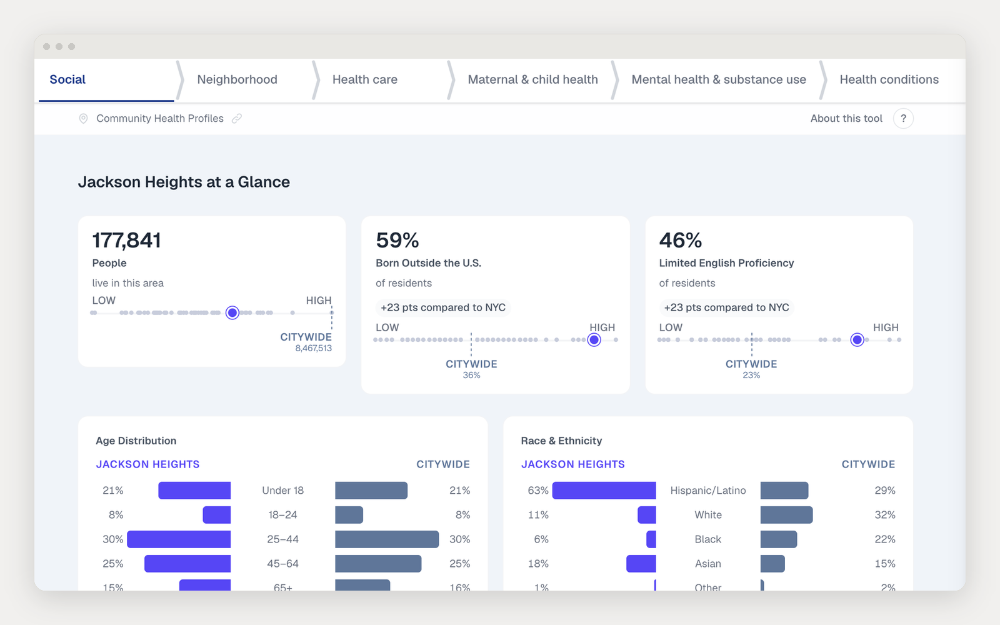
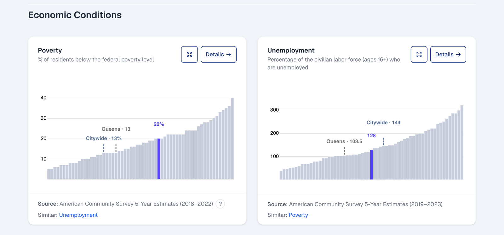

Case study · Prototype
Community Health Profiles, rebuilt as one system
Turning 59 static neighborhood health reports into a single config-driven data product: one render path, deep-linkable state, and interaction that works across the whole page.
- Role
- Product lead, design, and engineering
- Timeframe
- 2025–present (prototype)
- Team
- Led development; partnered with epidemiology and content teams on indicators and copy
- Stack
- Next.js, React, D3, config-driven rendering
- Status
- Unreleased prototype, password-protected

01Overview
NYC’s Community Health Profiles have existed for years as PDF booklets, one per community district, 59 in total, each carrying roughly 50 health indicators across chronic conditions, social and economic factors, and demographics, with comparisons to borough and citywide figures. They are widely cited and hard to use: no search, no comparison, no interactivity, and a production cycle measured in weeks.
I led a rebuild as a single web application where every neighborhood, indicator, and section is generated from configuration rather than bespoke pages. The prototype renders all 59 districts, supports side-by-side comparison, deep-links to any indicator, and can be updated by editing JSON with no engineering involved.
02The problem
- The content is combinatorial. 59 districts, about 50 indicators, 6 topic sections. Hand-building pages does not scale and drifts out of sync on every update.
- The audience is split. Community boards and residents want their own neighborhood at a glance; researchers and reporters want to compare districts and cite exact numbers.
- Updates were the bottleneck. New census or surveillance data meant re-laying-out documents by hand.
- Format limits reach. Accessibility and translation are difficult to do well in a PDF.
03Approach: config as the product
The system has five layers, each with one responsibility. Components never read data files directly; they only render what the config hands them.
- Data files. Raw JSON of indicator values for every neighborhood, borough, and citywide. The only files touched on a data refresh.
- Indicator registry. A catalog of every indicator: its data key, display title, source citation, units, decimal precision, whether a higher value is healthier, and which topic it belongs to.
- Section configs. Which indicators appear in which section, how they are grouped, and how each is visualized.
- Page registry. Maps a route to a config object.
- Renderer. Walks the config and produces the page from a fixed set of about a dozen components.

Three things hold the experience together on top of that base:
- URL-driven state. The selected neighborhood, the comparison, the active section, and the open indicator all live in the URL. Any view is linkable and the back button behaves.
- Cross-component interaction. Hovering a neighborhood on the map highlights it in every chart on the page, and hovering a chart highlights the map, through one shared hover context.
- Motion and loading, handled once. A single animation system and loading skeletons, with reduced-motion support and consistent keyboard navigation across the app.
04Key decisions
Config over components
Every hour on the config schema saved a day of page-building later. The risk was over-abstracting, so I kept the schema flat and readable, with a content guide aimed at non-engineers editing it directly.
URL as the single source of truth for view state
More wiring upfront, but comparison, deep links, sharing, and analytics all fell out of it for free.
One component set, no per-page code
Forces visual consistency and means a fix lands on all 59 districts at once. A genuinely unique layout needs a new block type, which is a deliberate, reviewed step rather than a one-off.
05Where it stands
The prototype is not yet public. It renders the full set of districts and sections, supports comparison and deep links, and moves the update path from document layout to a data edit.
06What’s next
- A content-team dry run: can they ship a full data cycle without engineering support?
- A translation pipeline. The config already separates copy from layout, which is most of the work.
- An accessibility audit against WCAG 2.2 AA before launch.
- Public release, then measurement of who uses it and how.